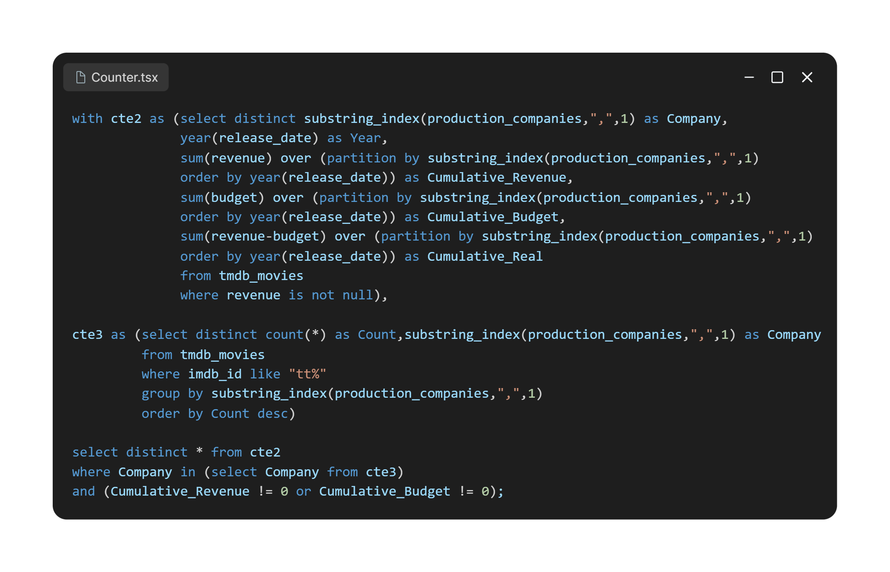

Visão geral
Da extração dos dados aos insights da indústria
Este foi meu primeiro projeto completo de análise de dados. O objetivo foi praticar a extração, a transformação e a exploração de uma base extensa do IMDb, conectando o tratamento dos dados a perguntas de negócio e visualizações no Power BI.
- Escala analisada
- 158.366.934 linhas
- Período dos dados
- 1894–2024
- Base principal
- 5 tabelas do IMDb
- Ferramentas
- Python, Pandas, MySQL e Power BI
Parte 01
Entendendo e preparando os dados
A primeira etapa apresenta o contexto, a estrutura da base e as decisões usadas para tornar os arquivos do IMDb adequados à análise em MySQL.
01 · Contexto
Uma empresa fictícia para orientar as perguntas
Para dar contexto de negócio ao estudo, criei a MoviesNow e a personagem Júlia. A empresa precisava compreender melhor os padrões do setor cinematográfico antes de definir sua estratégia. Esse cenário guiou a busca por uma fonte de dados ampla e a formulação das análises.
02 · Fonte
Conjunto de dados do IMDb
A base pública do IMDb reúne informações sobre títulos, profissionais, avaliações, anos de produção, gêneros e regiões. Para este projeto, foram selecionados cinco arquivos relacionados entre si.

Consultar o dicionário das cinco tabelas
title.akas.tsv.gz
- titleId: identificador único do título.
- ordering: ordem da linha dentro de um mesmo título.
- title: título localizado.
- region: região desta versão do título.
- language: idioma do título.
- types e attributes: atributos complementares da versão.
- isOriginalTitle: indica se este é o título original.
title.basics.tsv.gz
- tconst: identificador único do título.
- titleType: tipo ou formato do título.
- primaryTitle e originalTitle: títulos principal e original.
- isAdult: indica conteúdo adulto.
- startYear e endYear: anos de início e encerramento.
- runtimeMinutes: duração em minutos.
- genres: até três gêneros associados.
title.principals.tsv.gz
- tconst e nconst: identificadores do título e da pessoa.
- ordering: ordem da pessoa nos créditos.
- category e job: categoria e função exercida.
- characters: personagens interpretados, quando aplicável.
title.ratings.tsv.gz
- tconst: identificador único do título.
- averageRating: média ponderada das avaliações.
- numVotes: número de votos recebidos.
name.basics.tsv.gz
- nconst: identificador único da pessoa.
- primaryName: nome usado nos créditos.
- birthYear e deathYear: anos de nascimento e falecimento.
- primaryProfession: principais profissões.
- knownForTitles: títulos pelos quais a pessoa é conhecida.
03 · Modelagem
Relacionamento entre as entidades
O diagrama organiza as chaves usadas para conectar títulos, profissionais, avaliações e versões regionais. Essa etapa foi essencial para planejar os joins e evitar relações ambíguas durante as consultas.

04 · Preparação
Conversão dos arquivos e carga no MySQL
Como os arquivos TSV eram grandes demais para conversores on-line, usei Python
para padronizar os delimitadores e gerar arquivos CSV. Depois, substituí o Table
Import Wizard pelo comando LOAD DATA LOCAL INFILE, que ofereceu uma
carga mais adequada ao volume da base.


05 · Escala
O tamanho da base preparada
Ao final da preparação, o conjunto reunia dados históricos de produções e profissionais de mais de 240 países. Os números abaixo descrevem o recorte usado neste estudo.
- Linhas
- 158.366.934
- Arquivos
- 12,73 GB
- Colunas
- 32 em 5 tabelas
- Cobertura
- Mais de 240 países
Fonte: IMDb Non-Commercial Datasets.
Parte 02
Análises com MySQL e Power BI
Cada bloco parte de uma pergunta, contextualiza a consulta e apresenta primeiro o resultado visual. O SQL correspondente permanece logo abaixo para quem quiser aprofundar a leitura técnica.
Análise 01
Os 25 filmes mais bem avaliados no IMDb
A seleção combina a nota média com o volume de votos para reduzir o peso de avaliações pouco representativas. A ordenação prioriza títulos com maior evidência de consenso entre os usuários.

Ver consulta SQL

Análise 02
Gêneros mais presentes nos lançamentos de 2024 em diante
A consulta conta os gêneros associados a filmes, séries e curtas com lançamento previsto a partir de 2024, criando um retrato das categorias mais recorrentes nesse recorte da base.

Ver consulta SQL

Análise 03
Faixa etária entre profissionais de atuação
Como a base não trazia a idade pronta, ela foi estimada a partir dos anos de
nascimento e falecimento. A função COALESCE permitiu tratar registros
sem ano de falecimento e manter o cálculo consistente.

Ver consulta SQL

Análise 04
Curtas e longas-metragens ao longo do tempo
A comparação acompanha a produção de curtas e longas ao longo da série histórica. A extensão temporal da base permite observar como a quantidade relativa de cada formato mudou entre diferentes períodos.

Ver consulta SQL

Análise 05
Duração dos filmes e recepção da crítica
A análise relaciona duração, ano e nota média. No recorte observado, a duração média dos filmes com nota 10 passou de 78 minutos em 2008 para aproximadamente 102 minutos em 2024.

Ver consulta SQL

Análise 06
Regiões por quantidade de adaptações
A contagem usa as versões regionais dos títulos para mapear onde o conteúdo foi adaptado. Nesse recorte, o Brasil aparece na 13ª posição, com 126.385 registros.

Ver consulta SQL

Análise 07
Representação de homens e mulheres na atuação
A consulta compara a presença de atores e atrizes ao longo do tempo. O conjunto não possui dados salariais, portanto a leitura se limita à representação nos créditos cadastrados no IMDb.

Ver consulta SQL

Análise 08
Profissionais mais prolíficos da indústria
Esta foi uma das consultas mais exigentes em processamento. Ela conta a recorrência dos nomes nos créditos e destaca os profissionais com maior volume de aparições no recorte estudado.

Ver consulta SQL

Análise 09
Séries mais antigas ainda em andamento
O filtro identifica séries sem ano de encerramento e as ordena pelo início da produção. O resultado mostra títulos longevos que continuavam recebendo atualizações na data de coleta da base.

Ver consulta SQL

Análise 10
Lucro da indústria cinematográfica por ano
A série histórica agrega o lucro dos filmes entre 1913 e 2024. O gráfico evidencia uma forte queda no período de 2019 a 2021, coincidente com o impacto da pandemia de COVID-19 sobre o setor.

Ver consulta SQL

Análise 11
Orçamento, receita e lucro por empresa
A consulta agrega os valores por ano e usa a empresa principal de cada produção. As duas visualizações mostram o resultado geral e o comportamento de uma empresa selecionada no painel interativo.


Ver consulta SQL

Análise 12
Lucro da indústria por região
A consulta agrega os lucros por país e usa uma soma acumulada para comparar a participação regional no recorte. A visualização facilita a identificação de concentrações geográficas.

Ver consulta SQL

Análise 13
Lucro e avaliação por gênero
A última análise compara retorno financeiro e avaliação média. Documentários, por exemplo, aparecem com notas altas e lucros menores, enquanto outros gêneros seguem uma relação diferente entre recepção e resultado financeiro.

Ver consulta SQL

Parte 03
Síntese dos principais insights
A etapa final reorganiza as observações da análise em quatro temas, preservando o contexto e as limitações do conjunto de dados.
01
Profissionais da indústria
A maior parte dos profissionais de atuação vivos no recorte é adulta, enquanto atores mirins representam uma parcela pequena. A diferença entre homens e mulheres nos créditos diminuiu em relação a décadas anteriores, mas ainda permanece visível.
02
Economia do setor
A série analisada mostra crescimento de longo prazo e uma queda acentuada durante a pandemia. Os maiores resultados financeiros se concentram no hemisfério norte, com destaque para os Estados Unidos.
03
Gêneros e lançamentos
Ação, comédia e aventura aparecem entre os gêneros mais lucrativos do recorte, enquanto documentário, história e mistério obtêm avaliações mais altas em alguns casos. Para 2024 em diante, drama, comédia, documentário e ação eram os gêneros mais recorrentes na base.
04
Escala e distribuição
A Europa, a Índia e o Japão concentram muitos registros de adaptações. Entre os títulos com maior consenso entre nota e quantidade de votos estão Um Sonho de Liberdade, O Poderoso Chefão e Batman: O Cavaleiro das Trevas.
Conclusão
Um primeiro ciclo completo de análise
O projeto percorreu o fluxo completo: escolha da fonte, preparação de arquivos de grande volume, modelagem relacional, consultas SQL, visualização e comunicação dos resultados. A narrativa da MoviesNow ajudou a conectar o trabalho técnico a perguntas de negócio e consolidou os aprendizados obtidos ao longo do estudo.
Ver repositório no GitHub